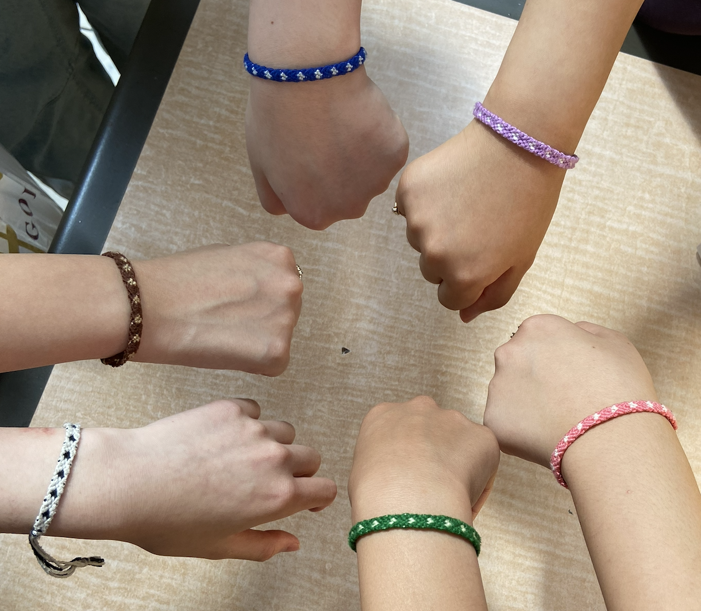

Welcome to The Forget Me Not Project

Our Mission: To inspire understanding and compassion for those affected by dementia through creative outreach, community education, and support for dementia research.
Dementia, including Alzheimer's disease, affects millions of people around the world, gradually impairing memory and cognitive function. Our project brings awareness to the lack of knowledge surrounding dementia and promotes a better care through education and community engagement.
Learn More